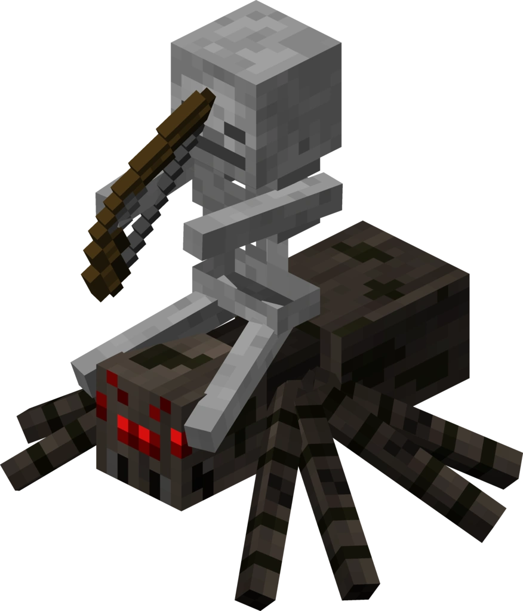

Esqueleto

Los esqueletos normales pueden aparecer en cualquier parte de la superficie si el nivel de luz es de 7 o menor .En el infierno, también pueden generarse en fortalezas inferiores a un nivel de luz de 7 o menos en lugar de un esqueleto del Wither y en el bioma de Valle de arena de almas a un nivel de luz de 7 o menos.
Hay un 1% de que aparezca un esqueleto montado en una araña, se llama Jinete arácnido (los demás esqueletos o arañas también pueden montarse en una araña).
Los jinetes esqueleto aparecen cuando un jugador activa una trampa de esqueleto. Los esqueletos montan en caballos esqueletos y están equipados con arcos encantados y cascos de hierro, y tienen inmunidad al daño durante 3 segundos después de su aparición.
Los esqueletos aparecen en zonas oscuras y arden cuando les da la luz del Sol. Cuando están cerca emiten un sonido de huesos. Tienen un alcance de 16 bloques y suben escaleras y sortean obstáculos hasta alcanzar el objetivo. A los 12 bloques de distancia se quedan quietos y disparan flechas al jugador. Los esqueletos huyen de los lobos y estos los persiguen. Si un esqueleto está a salvo de la luz del Sol atacará a cualquier lobo que le ataque. También atacan a los gólems de hierro. Si un creeper muere por un flechazo de esqueleto soltará como recompensa un disco de música.También pueden morir si se lanza una poción de salud instantánea.